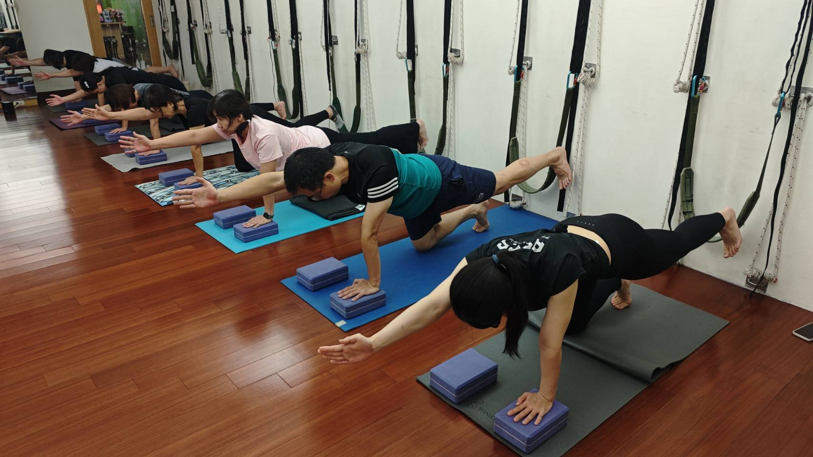

骨盆前傾，壁繩瑜伽實際上是怎麼處理的？

- 骨盆前傾的核心問題，是髖部前側太緊、核心與臀部太弱，兩邊失衡。
- 只練「用力」的核心動作，沒有同時鬆開太緊的髖前側，效果常常打折扣。
- 壁繩用繩子提供穩定支撐，能在安全角度下同時做「鬆」跟「練」這兩件事。
- 差別不是動作比較難，而是壁繩讓你在有支撐的狀態下，同時處理緊的地方跟弱的地方。
如果你已經知道自己骨盆前傾，也認真做過核心訓練、仰臥起坐，卻覺得小腹還是一樣凸、腰還是一樣痠——問題可能不是你不夠努力，而是核心訓練本來就沒有處理到骨盆前傾真正的原因。這篇來談壁繩瑜伽具體是怎麼處理這件事的，跟一般核心訓練差在哪裡。
先確認一下：你說的是這種骨盆前傾嗎
簡單講，骨盆前傾就是身體前後兩側的拉力不平均——前面（髖部）習慣性偏緊，後面（核心、臀部）習慣性偏弱，久了骨盆就被往前帶走。如果你還沒仔細確認過自己是不是這種狀況、成因細節是什麼，可以先看骨盆前傾＝小腹凸？先看懂再收這篇。這裡直接跳到下一步：知道原因之後，實際上該怎麼練。
為什麼「多做核心」常常沒有用
仰臥起坐、捲腹練的是「用力」，但骨盆前傾的根本問題出在角度，不是力氣不夠。緊繃的髖前側還在把骨盆往前扯，核心再怎麼練，角度也拉不回來。更麻煩的是，沒有任何支撐的地板核心動作，很多人會不自覺借下背或大腿的力來完成動作——動作做完了，但真正該練到的臀部和深層核心，其實還是沒被叫醒。
還有一個更根本的原因：髖前側太緊，會直接抑制後側臀部發力。這是身體很自然的機制——當一條肌肉長期處於緊繃、縮短的狀態，跟它方向相反的那條肌肉常常會連帶變得比較難被喚醒，不是它突然沒力氣，而是身體暫時「不太想用」它。這也是為什麼很多人明明很認真練臀部橋式、練核心，卻怎麼練都感覺不到臀部在出力——問題不在動作做得標不標準，而在於前面沒鬆開，後面自然叫不動。
壁繩實際上在做兩件事，不是「多一種核心動作」
壁繩瑜伽的做法不太一樣，重點是把「支撐」這件事先解決掉。繩子先幫你撐住身體重量，你不需要一邊擔心會不會摔、會不會失去平衡，才能真正把髖前側的緊繃拉開；同一時間，因為身體是穩定的，核心和臀部才有機會被單獨、精準地徵召出來出力，而不是被拿來當平衡工具。換句話說，「鬆」跟「練」是在同一個動作裡同時發生的，這正是空手做核心訓練很難做到的地方。

跟一般核心訓練，差別到底在哪裡
- 支撐方式不同：地板核心訓練靠自己的力量控制姿勢；壁繩用繩子分擔部分重量，讓你能專注在該用力的地方，而不是先忙著維持平衡。
- 是否同時處理「緊」跟「弱」：一般核心訓練多半只練「用力」；壁繩能在同一個動作裡，兼顧伸展髖前側跟喚醒核心臀部。
- 代償風險：沒有支撐時，身體容易不自覺用下背或大腿代償；有繩子輔助，比較容易把力量放回真正該出力的地方。
身體會用哪裡代償，因人而異
骨盆前傾的人做核心動作時，代償的地方不見得一樣，常見的有幾種：有人是下背過度用力，做棒式或捲腹時腰會不自覺拱起來；有人是肋骨外翻，吸氣時肋骨往前頂，看起來像挺胸，其實是胸廓沒有跟骨盆對齊；也有人是膝蓋鎖死，站姿類動作時靠關節卡住撐住身體，而不是用大腿肌肉出力。這幾種代償方式背後的邏輯類似——身體在找一個「不用真正出力也能撐住」的捷徑。壁繩的支撐能讓你暫時不需要靠這些代償撐住自己，比較容易感覺到「原來我平常都是用這裡在撐，而不是這裡在出力」的差別。
這幾種代償模式，壁繩支撐的著力點也會略有不同：容易下背代償的人，繩子能幫忙分擔一部分重量，讓下背不用一直繃著撐住身體；容易肋骨外翻的人，穩定的支撐點能讓你比較容易感覺到「肋骨要往下、往內收」而不是一直往前頂；容易膝蓋鎖死的人，因為不需要靠關節撐住平衡，比較能把注意力放回大腿肌肉該出力的地方。差別不大，但方向會依你身體實際的代償習慣微調。
這樣是不是代表核心訓練完全沒有用
不是。核心訓練仍然重要，只是單獨做、又沒有處理緊繃的髖前側，效果容易打折扣。比較實際的順序是：先把太緊的地方鬆開，同時喚醒沒在工作的核心與臀部，讓骨盆有機會回到中立位置，這時候核心訓練的效果才比較容易「有感」。
一個現在就能感覺的小測試
站成弓箭步，前腳彎膝、後腳伸直、後腳跟稍微離地，感覺一下後腳大腿根部（髖部前側）有沒有緊緊、被拉住的感覺。如果有，代表髖前側偏緊，這正是壁繩瑜伽能安全處理的重點區域之一。這只是自我觀察，不是要你硬壓拉伸，感覺到緊繃就先停在那個範圍就好。
本文為體態與姿勢的一般衛教與練習分享，非醫療診斷或治療。若有疼痛、舊傷或特殊病史，請先諮詢合格醫療專業人員。
常見問題
骨盆前傾為什麼多做核心訓練沒有用？
因為骨盆前傾的根本問題是角度跑掉，不是力氣不夠。只顧著練核心的「用力」，卻沒有同時處理太緊的髖部前側，角度通常拉不回來。
壁繩瑜伽跟一般核心訓練最大的差別是什麼？
差別在支撐方式。壁繩用繩子穩定托住身體，能在安全角度下同時做「伸展緊的髖前側」跟「喚醒核心與臀部」兩件事，不只是單純用力。
完全沒做過核心訓練，直接練壁繩會不會太難？
不會。壁繩本身就是設計給沒基礎、身體比較硬的人使用，靠繩子借力，慢慢找到「原來是這裡出力」的感覺，不需要先有底子。
我怎麼知道自己骨盆前傾的程度？
AI 體態檢測會在現場把骨盆角度拍攝、分析出來，讓你看得到具體角度，而不是只憑感覺猜測。
核心訓練完全不用做了嗎？
不是。核心訓練仍然重要，只是單獨做而不處理緊繃的髖前側，效果容易打折扣，兩件事需要一起處理。